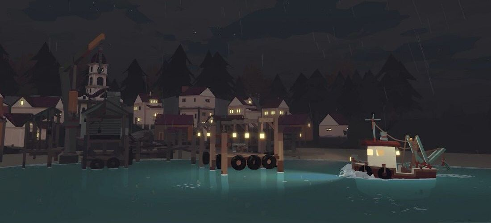
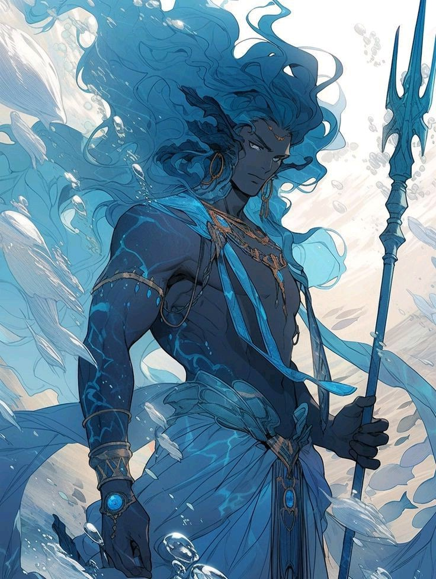
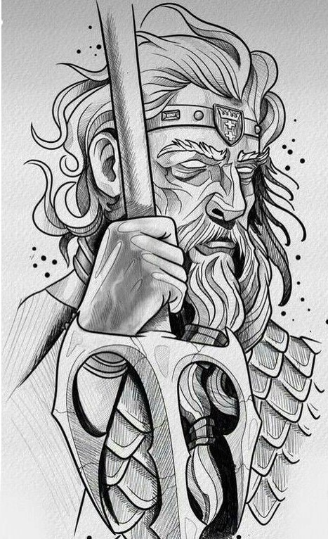
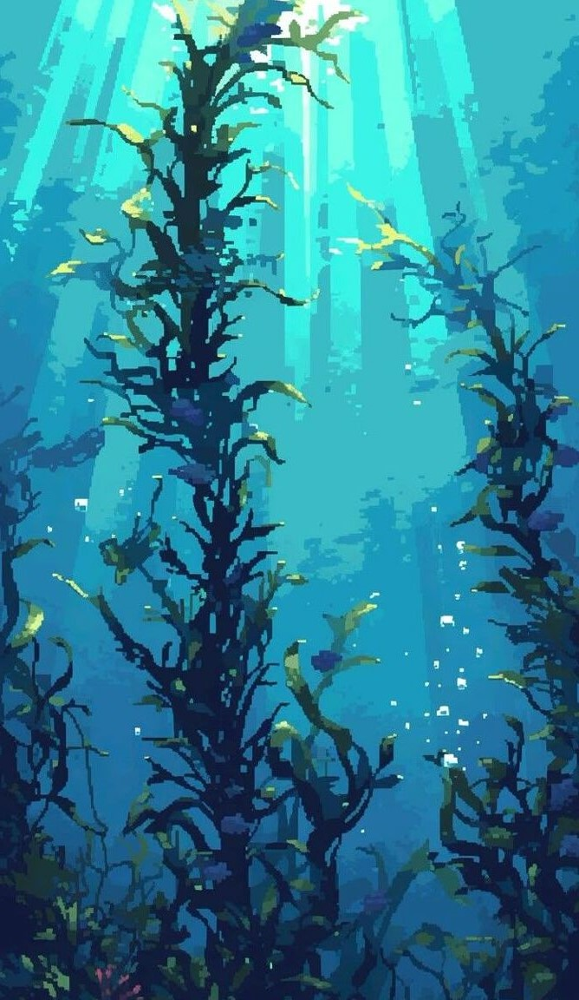
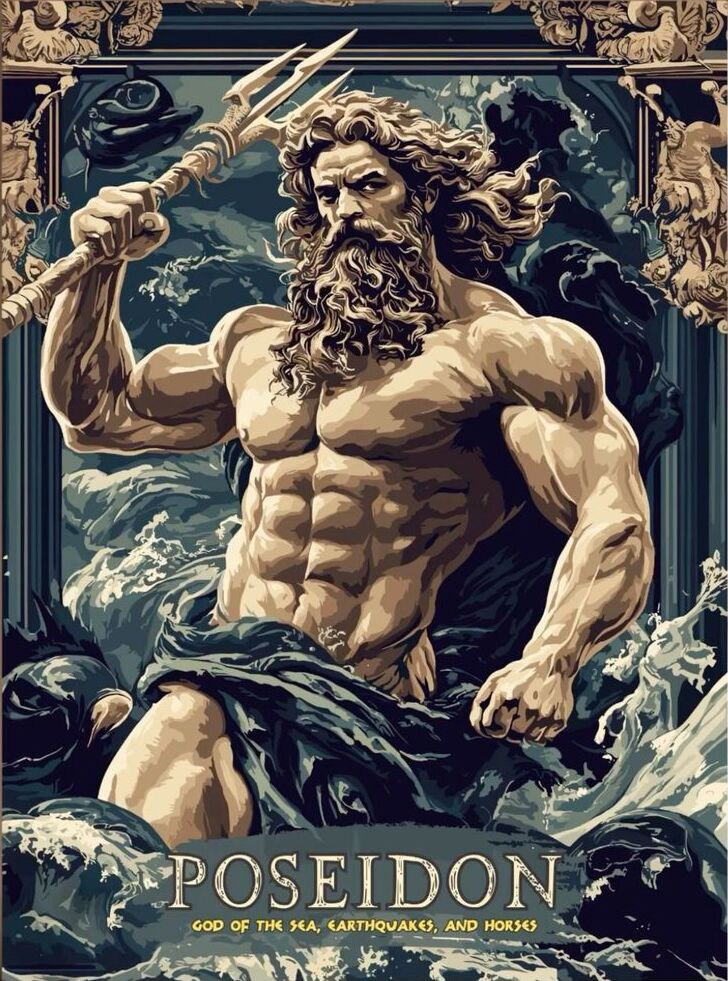
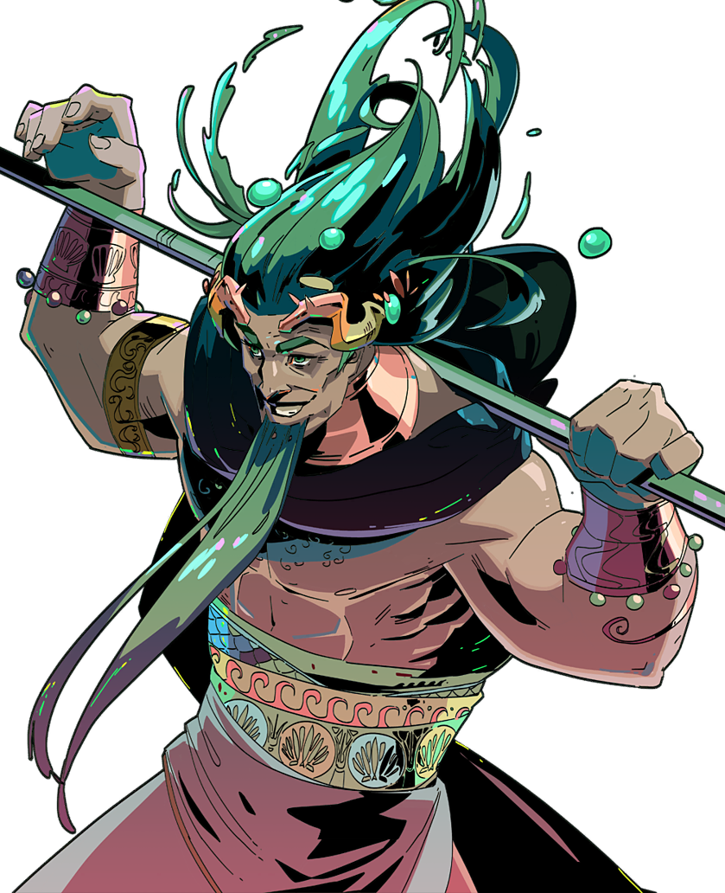
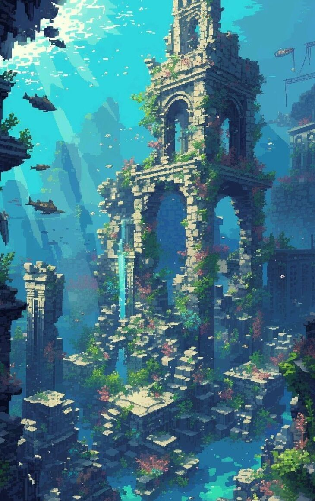

Clique Nos Tridentes Para Navegar Pela Página
Quem sou eu?
sou Poseidon, Deus dos mares
e também responsável pelas
tempestades e terremotos.
FIlho de cronos e reia,
irmão de Zeus, Hades,
Hera, Héstia e Deméter
Que mito é esse?
A perseguição de Poseidon a Odisseu começa quando Odisseu cega Polifemo, filho de Poseidon, durante sua jornada após a guerra de Troia. Furioso, Poseidon jura vingança e decide dificultar o retorno de Odisseu a Ítaca, lançando tempestades e criando obstáculos no mar. Ao longo dos anos, Odisseu enfrenta naufrágios e perigos causados pela fúria do deus do mar. Em um episódio, quando Odisseu recebe ajuda dos feácios, Poseidon cria uma enorme tempestade e destrói seu navio. No entanto, com a intervenção de outros deuses, Odisseu sobrevive e finalmente chega a Ítaca, embora a ira de Poseidon nunca desapareça completamente. A perseguição de Poseidon simboliza o poder dos deuses sobre os mortais e a luta constante de Odisseu para superar esses desafios.
Galeria
     Indicações
Músicas:
-
Moby Dick (Kamaitachi) -
escolhida pois passa uma
vibe de mar.
-
Dragão de Nome
impronunciável
(Kamaitachi)
Escolhida pois é uma
música que fala de um
monstro Implacavel.
-
Mount Everest (Labrinth)-
escolhida com base
em seu achismo de
superioridade.
-
You Can’t Hide (Ck9c) -
escolhida com base na
sua perseguição por Odisseu.
-
Chihiro (Billie Eilish) -
A música passa uma vibe
de fundo do mar
Filmes:
-
Percy Jackson e o Ladrão
de Raios (2010) - O filme
tem o tema de
mitologia grega.
-
Percy Jackson e o Mar de
Monstros (2013) - A
continuação do anterior.
-
Sangue de Zeus (2023) -
Uma série de mitologia
da Netflix.
-
Percy Jackson e os
Olimpianos (2023) - Uma
série de mitologia da
Disney.
-
Hércules (1997) - série
de mitologia grega
Jogos:
-
Sea of thieves - Jogo
com um mar realista e
tempestades fortes.
-
Subnautica - um jogo
com uma mar vasto e
vários monstros
marinhos.
-
Subnautica Below zero -
Continuação de
“Subnautica”.
-
Dredge - Um jogo de
pescar dentro de um
barco com alguns peixes
monstruosos.
-
Hades -
jogo de mitologia